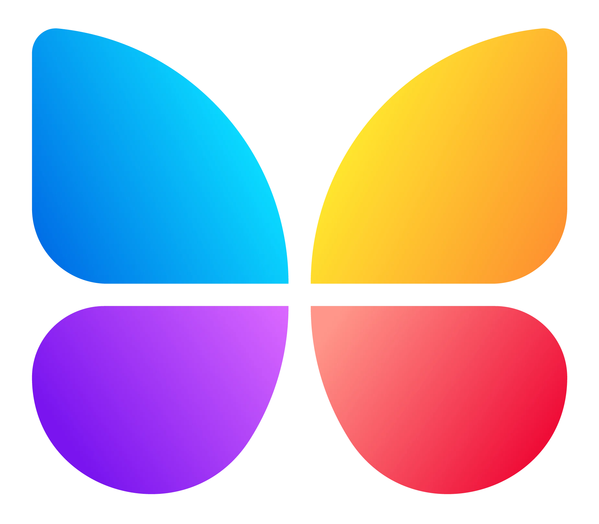

Step 1
Monitor in real-time
Track ButterflyMX, competitor names, and high-intent phrases so negative or misleading threads are seen early before they gain traction.

ButterflyMXLinkedIn is covered. But Meta ads still speak in one voice to different types of buyers, and on Reddit: where landlords, property managers, and HOA boards actually vet vendors ButterflyMX isnt fighting in the ring. I've drafted up a sample plan to lock down both.
ButterflyMX has built a strong presence on LinkedIn. However in the channels where landlords, property managers, and HOA members actually research and argue about product superiority they are under attack.
Current Meta creatives are broad and not focusing on h2h marketing. Meta's delivery system rewards creatives that speaks to a specific pain point over one that speaks to everyone at once.
Property-management subreddits are active and discussing which Video Intercom system to use.ButterflyMX is missing the opportunity to engage with these conversations, or even to defend its position.
Negative reviews from r/HOA and r/PropertyManagement are already surfacing in Google and AI Recommendations.
Each buyer has their pain points that pricks them harder than the others. They respond to different language and solutions.The fix isn't a bigger budget it's creatives built from what these audiences are already saying, in their own words, in the communities where they say it.
Start with a real post that already proves the pain point can capture attention.
n8n orchestrates analysis, structure, image generation, refinement, and asset delivery.
The audience's pain point becomes the hook; ButterflyMX becomes the relief.
I made a custom n8n workflow to automate this process, to allow for platform-specific messaging and seamless integration with tools. The same headline structure is currently reused across Facebook, Instagram, and X but each has its own algorithm and culture, and each community's viral posts are a free, ongoing source of the exact language to mirror back at prospects.
ButterflyMX already has negative Reddit discussion showing up where prospects research access-control vendors. That matters because Reddit threads can travel into Google results and AI recommendations, turning a few hostile posts into a much larger reputation problem. If some negative posts are being seeded by competitor-linked new accounts, leaving them unanswered gives those narratives time to become the version prospects see first.
For ButterflyMX, this is a brand-defense issue. Prospects searching “ButterflyMX reviews,” alternatives, or access-control recommendations may encounter Reddit opinions before they reach the website.
Why this matters:
“Reddit threads are 4.7x more likely to appear in AI-generated responses than blog posts. ‘Reddit’ appears in 34% of ChatGPT responses about Business recommendations.”— Octolens Reddit B2B Study, 2026
Negative threads can influence comparison searches, AI answers, and buyer perception at the exact moment a prospect is deciding who to trust. The cost is not just bad sentiment — it can mean fewer demos, weaker conversion, and more sales friction.
6 actions ButterflyMX can use to reduce reputation risk, earn trust, and improve what prospects find when they research the brand.
Track ButterflyMX, competitor names, and high-intent phrases so negative or misleading threads are seen early before they gain traction.
Useful answers give ButterflyMX credibility without looking like damage control. The goal is to be helpful enough that the brand earns trust naturally.
Fast responses let ButterflyMX add facts and context before a negative narrative becomes the dominant interpretation of the thread.
Established, disclosed accounts make ButterflyMX's participation look credible when the brand needs to answer criticism or clarify misinformation.
Watch “ButterflyMX vs.” and “alternative to” threads to catch competitor narratives, recurring objections, and high-intent buyers while decisions are still being made.
Repeated complaints show ButterflyMX what buyers distrust. Route those themes into product, support, sales enablement, and future ad creative.
A single ButterflyMX rollout sequence: monitor the conversation, seed trust, fix the owned community, then turn Reddit into a growth engine. Use the carousel to move through each stage.
Click a tile to open the full process.
5 mistakes that could make ButterflyMX's existing reputation problem worse instead of fixing it.
If ButterflyMX responds to suspected competitor astroturfing with fake accounts of its own, it risks validating the criticism and creating a second reputation problem.
Overly promotional replies can make negative reviewers look more credible. ButterflyMX should answer the problem first and mention the product only when useful.
A ban or moderator removal would weaken ButterflyMX's ability to respond where negative discussion is already happening.
When ButterflyMX arrives late, negative comments may already have the votes, replies, and search visibility that make them harder to counter.
Defensive replies can become screenshots and new evidence against the brand. ButterflyMX should acknowledge, clarify, and show the fix without arguing.
The first job is not posting more. It is finding the conversations that already shape how prospects see ButterflyMX and making sure credible context exists beside them.
These disclosed, long-term accounts become ButterflyMX's trusted distribution layer — built on contribution first, promotion second.
The current subreddit is product-heavy. The opportunity is to make it useful even when someone is not trying to buy ButterflyMX that day.
Once ButterflyMX has earned community trust, Reddit stops being only a reputation channel and becomes a source of audience language, creative ideas, and cross-platform growth.
Each account follows the same cadence. As soon as an action is highlighted in light purple, it becomes part of that account's ongoing daily baseline from that day forward.
Reddit is no longer just a community channel, it is a discovery layer for AI search, Google visibility, and B2B vendor recommendations.
Because Reddit threads are 4.7x more likely than blog posts to show up in AI answers, unmanaged sentiment can become an acquisition problem far beyond Reddit itself.
The right operating model is not promotion; it is useful participation, fast response times, and real community trust built before you need it.
Astroturfing, self-promo, and defensive engagement are exactly the behaviors most likely to damage both subreddit reputation and downstream AI/search perception.
Reddit should feed both brand defense and product insight: monitor, engage, learn, and route recurring themes back into content, positioning, and the roadmap.